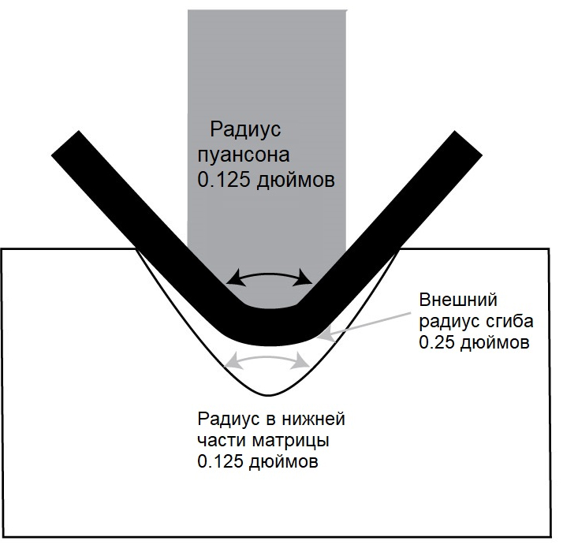
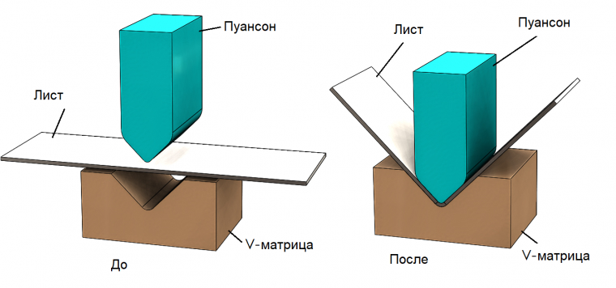
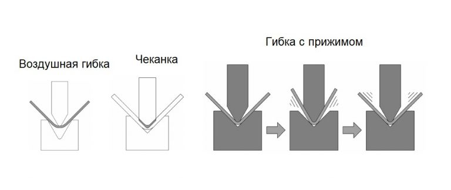
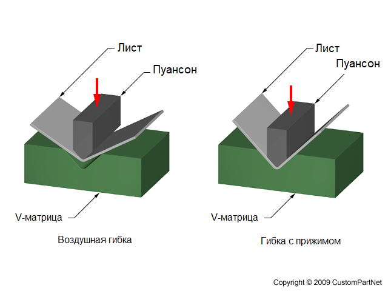
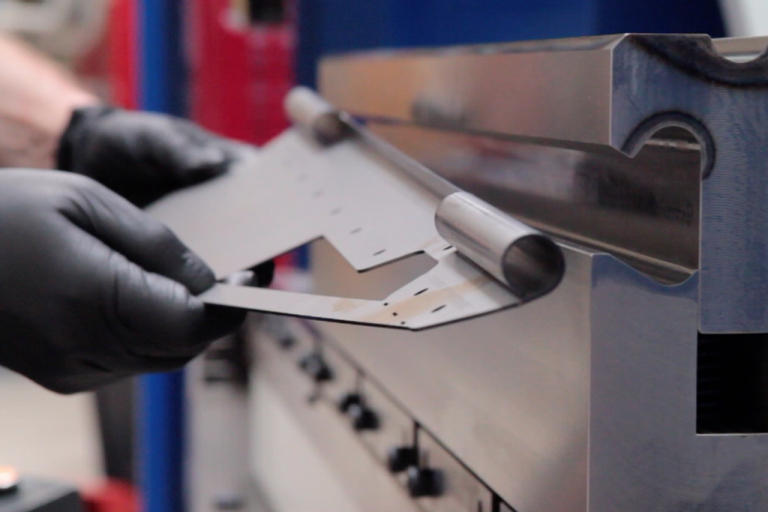
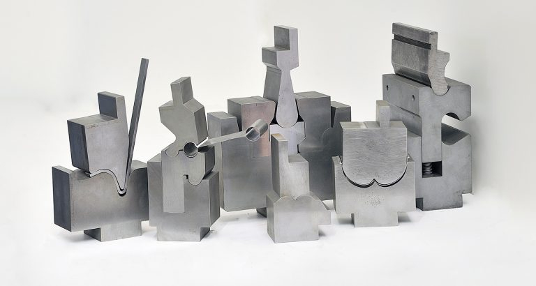

Распространенная повсеместно гибка листового металла, тем не менее, может стать проблемой и причиной расходов всего производства. Для ее успешного выполнения производителю приходится оценивать множество факторов. Есть некоторые технические моменты, принимающиеся во внимание для радиуса гибки и воздушной гибки. После их выяснения станет проще принять решение о том, пора ли приобретать новый гибочный инструмент.
Радиус имеет значение
Независимо от метода гибки: воздушная ли это гибка, чеканка или гибка с прижимом, внутренний радиус сгиба — центральный момент для обеспечения точности гибки листового металла. Без него невозможно рассчитать значения К-фактора, допуска на гибку, внешнего отступа и сбавления гибки. Внутренний радиус детали крайне важен для этого.

Радиус пуансона — радиус его наконечника. Радиусом матрицы обычно называют радиус плеча матрицы на какой-либо стороне ее раскрытия. Также речь может идти и о радиусе нижней части V-образного открытия матрицы.
При воздушной гибке или гибке с прижимом острый угол в нижней части V-образного отверстия по-прежнему считается радиусом с технической точки зрения. При чеканке будет использоваться матрица с радиусом значительной величины в нижней части V-образного отверстия. Он должен совпадать со внешним радиусом сгиба, аналогично как у штампов.
Как формируется радиус
Порядок формирования радиуса варьируется, в зависимости от метода гибки. Если используется пуансон с радиусом кончика, равным необходимому внутреннему радиусу, то для формовки изделия следует использовать или воздушную формовку, или гибку с прижимом. Так получится идеальный сгиб.

При воздушной гибке самое важное — ширина раскрытия матрицы, так как радиус составит определенный процент от этой ширины. Процент изменяется в зависимости от типа материала. Правильная ширина матрицы даст радиус гибки, который вам нужен.
Второй по важности фактор в воздушной гибки — радиус кончика пуансона. Он не должен превышать естественный радиус, формирующийся на детали, и быть меньше того, что называется сгиб под острым углом — минимального внутреннего радиуса, возможного без вминания центра сгиба. Такая настройка чеканки может вызвать проблемы. Поэтому радиус нижней части матрицы не может быть меньше внешнего радиуса гибки.

В зависимости от необходимого внутреннего радиуса эти расчеты могут использоваться для выбора подходящего раскрытия матрица и радиуса пуансона для выполнения задачи. Чем ближе радиус кончика пуансона к естественно формирующемуся радиусу, тем более стабильными и подходящими будут сгибы как с точки зрения размеров, так и углов.
Инструмент для воздушной гибки
Если вы выполняете воздушную гибку, необходимо знать, что угол матрицы, радиус матрицы и радиус нижней части матрицы не влияют на естественно формирующийся внутренний радиус изделия, которое зависит от ширины матрицы. Знайте, что следует использовать исключительно инструмент для воздушной гибки — под острым углом.

Объединение такого инструмента с усилием, необходимым для гибки с прижимом приведет к такому давлению на боковую часть инструмента, что он сломается пополам в середине.
Инструмент как расходный материал
Часто бывает, что производитель приобретает новый, самый современный гибочный пресс и продолжает использовать на нем свой старый, пользованный инструмент и устаревшие методы работы. Зачастую он остается недоволен своим приобретением — новое оборудование на оправдало его ожиданий!

Инструмент для гибочных прессов следует считать расходным материалом: он служит долго, но не навсегда, так как изнашивается. Дополнительное время, которое понадобится оператору для исправления ошибок, непосредственно возникающих из-за изношенного инструмента, будет стоить дороже нового качественного инструмента.

Мастера, менеджеры, директора могут не хотеть тратить лишние деньги на новый инструмент. Тем не менее, операторы и техники точно так же виноваты в том, что не используется новый инструмент, современные методы гибки и оборудование. Иногда для выполнения заказа требуется специальный инструмент, для установки которого на новом гибочном прессе требуются адаптеры (от традиционного пресса к прецизионному или наоборот). Такие проблемы возникают из-за человеческого фактора и нежелания пробовать что-то новое.
Источник: https://www.thefabricator.com/